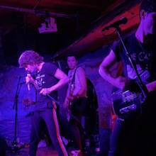

Recently Published Work
January 2020 Playlist

Start the new year off right.
Read More
Bad Nerves Talks FIDLAR, New Music, & Their Biggest Inspirations

Bad Nerves caught the eye of UK punks with the release of their first single, "Daydreaming." From line-up changes to a few more years of experience under their belt, the band has perfected the essence of garage punk rock with their catchy hooks and wired stage presence.
Read More
Extinction Rebellion Protests Take Over London

Moving into their second week of protest in London, Extinction Rebellion continues making headlines worldwide. This international movement utilizes non-violent civil disobedience in order to bring awareness to impending mass extinction and social collapse.
Read More